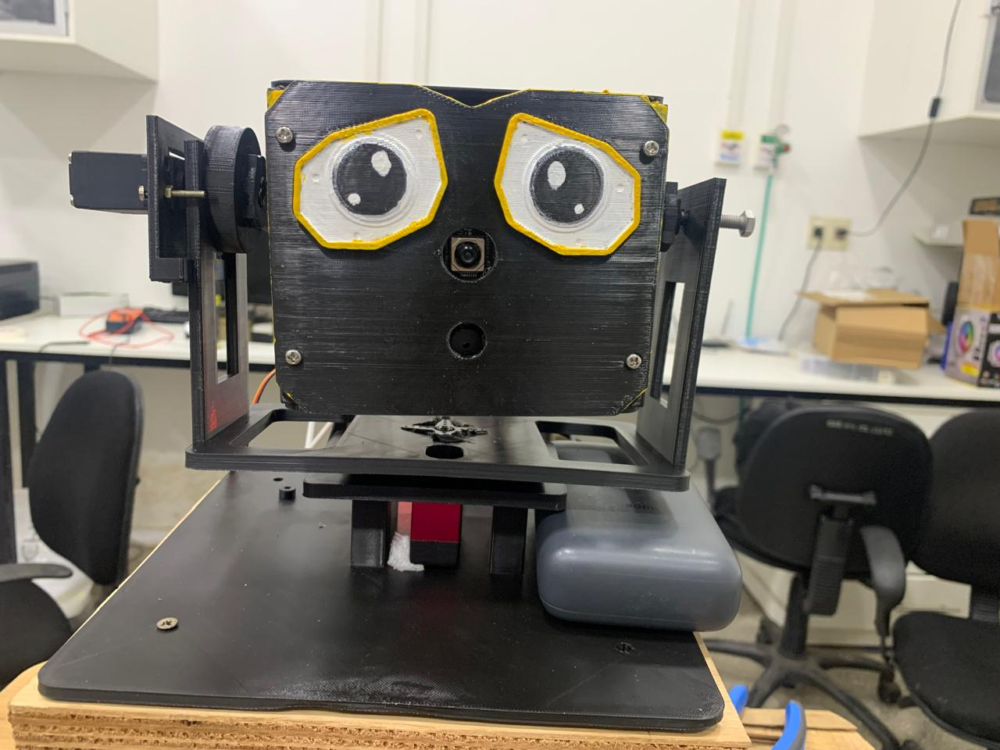
| 1 | Qué es Wall-E y qué hace |
| 2 | Cómo avanzó el proyecto (línea de tiempo) |
| 3 | Construcción mecánica: del v2 al v6 R4 |
| 4 | Hardware y electrónica: componentes, conexiones, pines y alimentación |
| 5 | Los servos: caracterización, calibración y conversión grados → pulso |
| 6 | Control de los motores: trayectorias, límites, watchdog y STOP |
| 7 | Firmware de la ESP32-C3 y protocolo serie |
| 8 | Arquitectura del software en la Raspberry Pi |
| 9 | Percepción: personas, rostros, mirada y pose |
| 10 | Eventos: definición operativa de cada uno |
| 11 | Detector de camisetas Olimpia / Cerro |
| 12 | Control de la mirada y foco de atención |
| 13 | Comportamientos y árbitro |
| 14 | Modos de personalidad (diagramas de estados) |
| 15 | Buzzer y sonidos |
| 16 | Monitoreo, log y operación (panel, comandos) |
| 17 | Por qué se decidió cada cosa |
| 18 | Resultados medidos, pruebas y lo que falta |
| 19 | Para la defensa: preguntas probables y respuestas cortas |
monoespaciado
son archivos o parámetros del repositorio: todos los números (límites, umbrales, tiempos) salen de config.yaml, que
concentra todos los parámetros. Los recuadros azules explican decisiones; los naranjas, advertencias o cosas sin probar.Wall-E (proyecto Keepon pro) es una cabeza robótica con ojos sobre un cuello de 3 grados de libertad. Una cámara en la cara ve a las personas; la Raspberry Pi decide qué hacer y una ESP32-C3 mueve los servos y toca sonidos en un buzzer. Mirar a alguien = centrarlo en la imagen.
| 3 GDLyaw ±70° · pitch −20/+30° · roll ±20° | 12–17 Hzdetección de personas en la Pi (pedido: ≥ 10 Hz) | 36–39 Hzlazo de control y árbitro | 258tests automáticos (36+ comparan firmware y simulador) |
| Situación | Evento | Respuesta del robot |
|---|---|---|
| No hay nadie | — | Observador: centra la vista y explora la escena con barridos lentos de ±45°, sacadas rápidas a puntos de interés y pequeñas inclinaciones de roll. |
| Aparece una persona | PERSONA | Seguimiento: centra su rostro con yaw y pitch. Con varias personas prioriza a quien lo mira. |
| La persona saluda con la mano | SALUDO | 3 cabeceos + sonido tipo R2D2. |
| Lleva la camiseta de Olimpia | CAMISETA_OLIMPIA | Silba la polca de Olimpia sin dejar de seguirla, una vez por aparición de la persona. |
| Lleva la camiseta de Cerro | CAMISETA_CERRO | Abucheo (silbido de reprobación). |
| La persona lo mira | ME_MIRA | Según el modo: Tímido aparta la mirada; Atrevido levanta el mentón. |
| La persona se va del campo visual | SALIENDO | En modo Maleducado: silbido de piropo, una vez por salida. |
| Se queda quieta 3 s | — | Curiosidad (extra): inclina la cabeza 15° en roll. |
| El operador manda un comando | OPERADOR | Desde el panel del celular: STOP y HOME (enclavados hasta RESUME), demostración de los 3 ejes, cambio de modo con beep, sonidos y volumen. |
De medir si la Pi alcanzaba, a un robot armado que sigue, saluda y reacciona a camisetas. La historia completa está en docs/BITACORA.md.
keepon/sim_esp32.py) y personas sintéticas
(keepon/synthetic.py), para probar el árbitro y los comportamientos sin mecánica. El firmware se escribió después como copia
de ese simulador, y los tests comparan los dos paso a paso. Así cada pieza llegó al robot ya probada.Estructura impresa en 3D, diseñada por el grupo (CadQuery/Python + SolidWorks). El modelo vigente es el v6 R4
(docs/diseno_v6/), armado desde el 03/11.
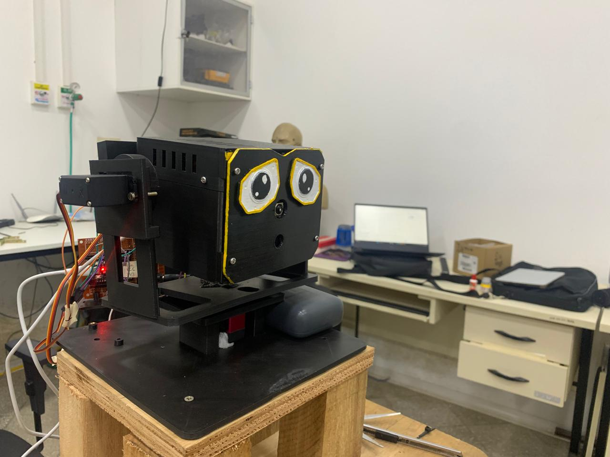
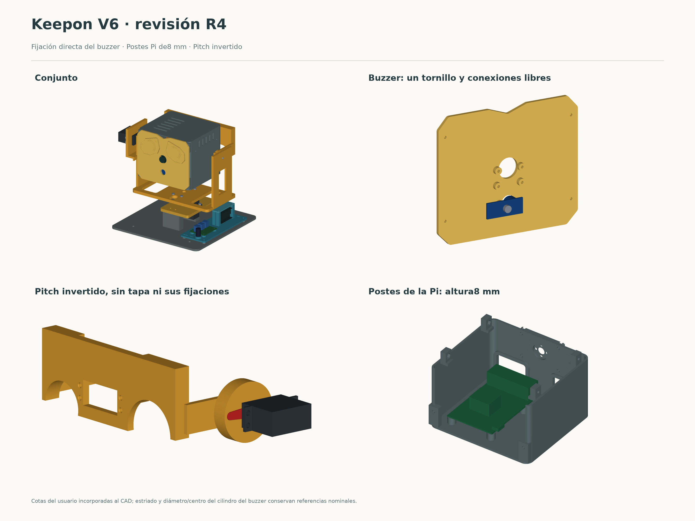
Los ejes de pitch y roll se cruzan en (0, 0, 163) mm y el centro óptico de la cámara está a la misma altura: al girar, la cámara rota sobre sí misma y no se desplaza, lo que simplifica el control de la mirada. |
| Versión | Fecha | Qué cambió y por qué |
|---|---|---|
| v2 | oct. | Primer cuello completo de 3 ejes; el cuello se reutiliza en la v3. |
| v3 | 14/10 | Pi dentro de la cabeza y la cámara como nariz: la cinta de la cámara mide ~150 mm y no llega a la base. Consecuencias: Pi alimentada por el GPIO si el USB-C queda tapado, y pitch con +30° arriba y −20° abajo (más abajo la cara toca el plato). |
| v4 | 14/10 | Disposición con el eje de pitch sobre el de yaw y base en U (el vuelco sobre el yaw baja a 0,81 kgf·cm); caja base con powerbank, bornes de la fuente, interruptor y bornera. |
| v6 R4 | 30/10 | Vigente y armado. Disco rojo de 25T para el roll, postes de la Pi de 8 mm, brazo de pitch invertido, buzzer fijado detrás de la cara con un tornillo. Verificado sin interferencias en 45 poses nominales. |
| Componente | Función y datos clave | |
|---|---|---|
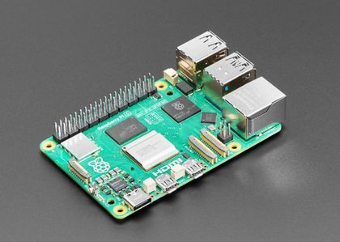 | Raspberry Pi 5, 4 GB | Toda la percepción, la decisión y el control. Ubuntu 24.04 + ROS 2 Jazzy (no se puede cambiar el SO: la Pi se usa en otros proyectos). Va en la cabeza. |
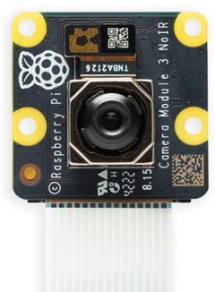 | Camera Module 3 NoIR (IMX708) | 640×480 a 30 fps. Montada invertida (orientation_deg: 180). Campo útil ≈ 37° × 28°: a 640×480, camera_ros recorta el sensor. Sin filtro IR: los colores se corren. |
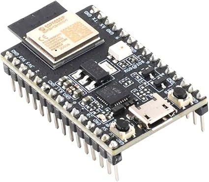 | ESP32-C3-DevKitM-1 (clon CH340) | Pulsos de los servos y tonos del buzzer. Conectada a la Pi por USB serie a 115 200 baudios. |
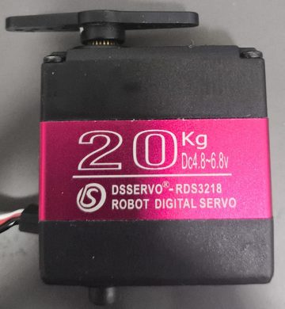 | DSSERVO RDS3218 (yaw) | 270°. Sin pulso mantiene la posición. No tiene tope mecánico: los límites de software protegen el cableado. |
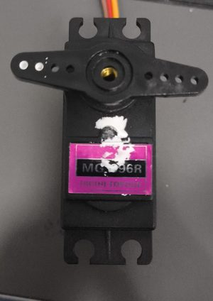 | 2 × TowerPro MG996R (pitch y roll) | ~10 kgf·cm a 6 V. Sin pulso quedan flojos: la cabeza cae si se corta el pulso o los 6 V. |
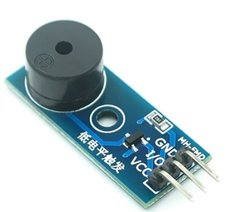 | Buzzer pasivo MH-FMD | Frecuencia variable (melodías). Trae su transistor PNP: VCC a 3V3, activo en bajo. |
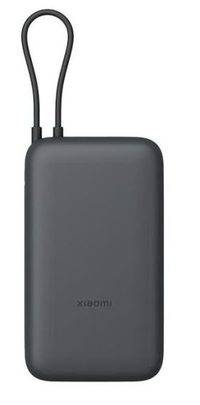 | Powerbank Xiaomi PB2020MI | Alimenta la Pi: 20 000 mAh, 5 V / 3 A por USB. Dura ~9 h. |
| Fuente de laboratorio | Servos a 6,0 V con límite de corriente en 4–5 A (uso normal 2–3 A; un servo trabado pide 2,5–4,2 A). |
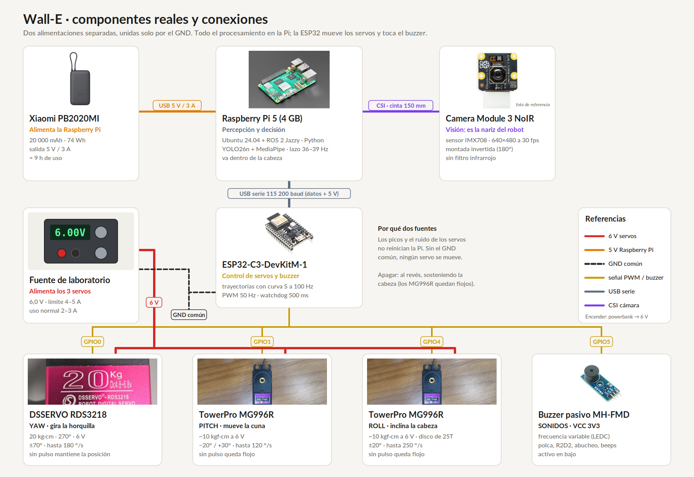
scripts/diagrama_componentes.py.
Pines de la ESP32-C3
|
Encendido y apagado
¿Por qué ese orden?
Los servos no tienen realimentación: el primer pulso los lleva a HOME a toda velocidad. Si la ESP32 ya está mandando el pulso de HOME cuando
llegan los 6 V y la cabeza está cerca, el salto es chico. Al apagar, sostener la cabeza: los MG996R quedan flojos.
|
Un servo de hobby recibe un pulso cada 20 ms (50 Hz); el ancho del pulso indica el ángulo. No informan su posición:
el control es en lazo abierto, por eso cada servo se midió en el banco (pruebas_servos/).
firmware/keepon_fw/nucleo.cpp, parámetros de neck.servos)
pulso [µs] = centro + signo × ángulo / (grados por µs), recortado a [min, max].| Eje | Servo | centro | grados/µs | min / max [µs] | signo | Observaciones |
|---|---|---|---|---|---|---|
| yaw | RDS3218 | 1500 | 0,130 / 0,136 | 950 / 2020 | −1 | asimétrico: un valor por lado de 1500 µs; ±70° ≈ 960 / 2010 µs |
| pitch | MG996R | 1500 | 0,092 | 1100 / 1800 | −1 | pulso mayor = la cara baja; +30° = 1174 µs, −20° = 1717 µs |
| roll | MG996R | 1500 | 0,092 | 1000 / 2000 | +1 | +217 µs = +20°; signo verificado montado el 08/11 (estaba al revés) |
El signo deja la misma convención para los tres ejes (yaw + = derecha, pitch + = arriba, roll + = horario visto desde atrás) aunque cada servo esté montado en un sentido distinto. Los límites en µs son más amplios que los recorridos y protegen la mecánica si alguna vez llega un ángulo fuera de rango.
| Eje | Qué se probó | Resultado |
|---|---|---|
| yaw | Dos RDS3218 | El n.º 1 vibraba quieto cerca de 1500 µs (≈ 0,5 A); al intercambiarlos la vibración siguió al servo → descartado. Queda el n.º 2. |
| pitch | HS-7955TG (09/10–05/11) → MG996R nuevo | El HS es fuerte (18 kgf·cm) y sin pulso se mantiene firme, pero metía mucho ruido en la alimentación. El grupo pasó a un MG996R nuevo. |
| roll | MG996R n.º 1 (13/10–05/11) → MG996R nuevo | El n.º 1 tenía una banda muerta de ~10°: de +25° a 0° quedaba en +10°. Se compensó en el firmware sumando 151 µs según el sentido
del movimiento (compensacion_us). El nuevo vuelve a 0 sin compensación. El 08/11 se cambió por otro MG996R igual (cero en 1500 µs); vibra solo girando a la derecha en la zona negativa (−20…0), con cualquier perfil: probable servo o carga. |
La Pi manda referencias de ángulo; la ESP32 genera la trayectoria suave hasta ellas, 100 veces por segundo, respetando límites de posición, velocidad y aceleración. Así ningún comportamiento puede dar un golpe al cuello.
|
Cada eje sigue un perfil trapezoidal: acelera con El cálculo es discreto y exacto ( Curva S (desde el 08/11): la posición que va al servo es el promedio del trapecio en una ventana de
Ejemplo: girar 25° en yaw lleva ≈ 0,5 s (0,49 s en el simulador). Los valores del roll están en prueba. |
| Mecanismo | Qué hace | Por qué |
|---|---|---|
| Watchdog 500 ms | Si la ESP32 no recibe un comando válido en 500 ms, corta el sonido, frena con amax y mantiene la postura. La Pi manda PING cada 200 ms si no mandó otra cosa. | Si la Pi se cuelga o se desconecta el USB, el robot no queda moviéndose. |
| STOP enclavado | Frena suave, corta el sonido y rechaza movimientos y sonidos hasta RESUME. | Orden del operador con la máxima prioridad; enclavado para que ningún comportamiento lo libere solo. |
| Pulso permanente | En STOP y watchdog se sigue mandando el último pulso a los tres servos. | El MG996R sin pulso queda flojo y la cabeza caería. |
| Arranque en HOME | Al encender, el firmware arranca en HOME y avisa con HELLO 0. | Sin realimentación, la única postura conocida es la que se manda primero. |
El firmware (firmware/keepon_fw/) es una copia en C++ del ESP32 simulado en Python. 36+ tests compilan el núcleo del firmware
en la notebook y comparan sus respuestas y posiciones con el simulador paso a paso.
Archivos
Estados del firmware |
Comandos (Pi → ESP32)
Líneas ASCII de hasta 64 caracteres a 115 200 baudios. Cada comando lleva un número de secuencia ( |
HELLO 0, la ESP32 se reinició: la Pi cancela todo, toma HOME como referencia, reabre la sesión y reenvía el STOP si estaba activo.Todo corre en la Pi, en Python puro. ROS 2 se usa solo para leer la cámara (camera_ros). La percepción va en 2 procesos aparte y el
lazo de decisión y control corre a 40 Hz.
keepon/robot.py a 40 Hz; la percepción manda siempre el último resultado y nunca bloquea el lazo.| Módulo | Qué hace |
|---|---|
perception.py | Los 2 procesos de percepción, fijados a núcleos. Mandan su resultado por una cola de tamaño 2 que descarta lo viejo. |
tracker.py | Tracker por solapamiento de cajas (IoU), propio: mantiene el ID de cada persona entre cuadros. |
eventos.py, camiseta.py | Pasan de percepción cruda (cuadro a cuadro) a eventos filtrados en el tiempo. |
world.py | Modelo del mundo: personas con ID, caja, rostro, eventos activos y antigüedad del dato. |
gaze.py | Control de la mirada y foco de atención. |
behaviors.py, arbiter.py, actuators.py | Comportamientos, árbitro y filtro de comandos por dueño. |
trajectory.py, protocol.py, link.py, sim_esp32.py | Trayectorias, protocolo, enlace serie real o simulado, y la ESP32 simulada (especificación del firmware). |
robot.py, overlay.py | Lazo principal, resincronización si la ESP32 se reinicia, log CSV y overlay de monitoreo. |
Modelos preentrenados (permitidos por la consigna, con su fuente) y todo lo demás propio. El reto fue que entre todo en la CPU de la Pi a ≥ 10 Hz.
| Qué | Cómo | Fuente / por qué |
|---|---|---|
| Personas | YOLO26n exportado a NCNN, entrada 256 px, confianza 0,4 | Ultralytics. A 480 px tardaba 79 ms y saturaba la CPU; a 256 px tarda 18 ms y detecta a 2 de 2 personas a 1,5 m en el 100 % de los cuadros. |
| ID entre cuadros | Tracker IoU propio | El ByteTrack de Ultralytics costaba ~68 ms por cuadro en la Pi. |
| Rostro | MediaPipe BlazeFace (6 puntos) sobre un recorte de 192 px de la cabeza | Google MediaPipe. Face Landmarker (478 puntos) tardaba ~49 ms por cara y sobre la imagen completa encontraba solo 0,4–0,7 de 2 rostros. |
| ¿Me mira? | solvePnP con los 6 puntos → orientación de la cara | Ángulo entre el eje de la cara y la línea cara → cámara < 15° (looking_deg). |
| Pose (brazos, hombros) | MediaPipe Pose lite, hasta 2 personas | Google MediaPipe. Para el SALUDO y para ubicar el torso (camisetas). |
docs/ESTADO_PI.md). La barra del lazo está fuera de escala (36–39 Hz).Un evento no se dispara por un cuadro suelto: cada uno tiene un umbral y un filtro temporal con histéresis (keepon/eventos.py, parámetros en
eventos: y camiseta: de config.yaml).
| Evento | Condición en cada cuadro | Filtro temporal |
|---|---|---|
| PERSONA | Caja de YOLO de clase persona con confianza ≥ 0,4, asociada a un ID por el tracker. | Si el objetivo desaparece menos de 1 s, se mantiene; después se libera (lost_hold_s). |
| ME_MIRA | Desvío entre el eje de la cara y la línea cara → cámara < 15°. | Se activa tras 0,5 s seguidos mirando y se suelta tras 0,3 s sin mirar. |
| SALUDO | Muñeca al menos 0,1 hombros por encima del hombro, que oscila de costado con amplitud ≥ 0,25 anchos de hombros (medido en hombros para no depender de la distancia). | 2 ciclos (cambios de sentido) dentro de 2,5 s → un evento. Para contar otro, la mano tiene que bajar 0,4 s: un gesto = una respuesta. Cooldown de 5 s por persona. |
| CAMISETA_* | Clase del torso según reglas de color y patrón (capítulo 11). | 6 cuadros seguidos para confirmar y 6 para soltar, por persona. La respuesta suena una vez por aparición de cada persona (por ID del tracker; si sale más de ~1 s, vuelve con otro ID). |
| SALIENDO | A menos del 15 % del ancho del borde y alejándose a ≥ 80 px/s, o el yaw a menos de 4° de su límite con la persona más allá del centro. | Se activa si dura 0,2 s y se suelta tras 0,6 s sin la condición. |
Reglas de color y patrón sobre el torso, sin red entrenada (la guía lo permite). Desarrollo propio: keepon/camiseta.py, corre en el proceso de pose.
|
1. Ubicar el torso. Con los hombros de MediaPipe: desde 0,15 hasta 1,1 anchos de hombros debajo de ellos, descartando un 10 % a cada lado (brazos). Se exigen hombros visibles, al menos 40 px de ancho y 40 % del torso dentro del cuadro. 2. Clasificar cada píxel en HSV (rojo, azul, blanco, oscuro) con umbrales medidos con la NoIR sobre las prendas reales. 3. Buscar el patrón.
|
| Toma (60 s, a 1,2 / 1,8 / 2,5 m) | Detectada tras el filtro de 6 cuadros | Falsos positivos |
|---|---|---|
| Olimpia titular | 82 % (99 % desde los 10 s) | 0 % |
| Cerro 2026, mitad y mitad | 98 % | 0 % |
| Remera roja lisa | — | 0 % |
| Remera azul marino lisa | — | 0 % |
| Remera blanca lisa | Solo probada con una imagen sintética (test). Falta una real. | |
Limitación conocida: la camiseta del Barcelona es casi igual a la de Cerro por color y patrón.
|
El error angular de la cara respecto del centro óptico es: error_yaw = atan((u − cx) / fx) · error_pitch = atan((v − cy) / fy)
Con fx ≈ 948 px, 1° equivale a ~16,5 px en el centro de la imagen. La cámara apunta 8° por debajo de la cara ( |
velocidad) la referencia avanzaba un poquito en cada ciclo según el error: velocidad = kp × (|error| − zona muerta), con saturación y
suavizado EMA. Eso hacía que los servos se arrastraran despacio y vibraran. Con la mirada por objetivo, en el simulador los cambios de referencia
bajaron de 25 a 0 con la persona quieta y de 300 a 29 con la persona caminando. El modo velocidad queda como respaldo en config.yaml.| Regla | Detalle |
|---|---|
| 1. Quien mira al robot | Prioridad estricta: una persona con ME_MIRA gana siempre a una que no mira. |
| 2. Si nadie mira | Puntaje = 0,6 × tamaño + 0,4 × centrado (la más cercana y central). |
| 3. Histéresis | Un candidato tiene que ser mejor durante 1,5 s seguidos para quitarle el foco al actual: evita saltos constantes. |
| 4. Pérdida breve | Si el objetivo desaparece menos de 1 s se mantiene la mirada; después se libera y vuelve el Observador. |
Hay dos recursos exclusivos: el cuello (NECK) y el buzzer (BUZZER). Cada comportamiento propone acciones; el árbitro decide quién es dueño de
cada recurso en cada instante. Es desarrollo propio (keepon/arbiter.py).
| Prio. | Comportamiento | Recursos | Lo puede interrumpir | Qué hace |
|---|---|---|---|---|
| 0 | OPERADOR | todos | nadie | STOP y HOME enclavados hasta RESUME, sonidos, beep de cambio de modo (el último sonido pedido gana). |
| 0 | EJES | cuello | nadie | Demostración de los 3 ejes (~15 s, botón del panel); al terminar vuelve a HOME y retoma el Observador o el seguimiento. |
| 1 | SALUDO | cuello + buzzer | solo el operador | 3 cabeceos de 12° + R2D2. Cooldown 5 s por persona. |
| 2 | CAMISETA | buzzer | operador o saludo | Polca (Olimpia) o abucheo (Cerro), una vez por aparición de cada persona. |
| 3 | MODO | cuello o buzzer | los más importantes | Reacción del modo de personalidad (capítulo 14). |
| 4 | SEGUIMIENTO | cuello | cualquiera más importante | Mantener la mirada en la persona objetivo (continuo). |
| 5 | OBSERVADOR | cuello | cualquiera más importante | Explorar sin personas (continuo): centra, barre ±45° a 25 °/s de media con mínimo jerk y cada 2 barridos hace una sacada a un punto de interés con roll ±5°. |
|
Actuators descarta cualquier comando de quien no es dueño del recurso: nunca hay dos controladores escribiendo al cuello. La curiosidad y los gestos de los
modos se calculan dentro del dueño del cuello, sumados a la mirada. En el escenario simulado de 30 s se comprueba que hay cero violaciones.Si la persona seguida queda quieta 3 s (su dirección se mueve menos de 5°), el robot inclina la cabeza 15° en roll durante 2 s, alternando el lado, y no lo repite antes de 8 s.
Se cambian en cualquier momento desde el panel o con keepon n|t|a|m; cada cambio se confirma con un beep distinto. El modo inicial es Neutro.
| Modo | Disparador | Reacción | Beep |
|---|---|---|---|
| Neutro | — | Solo sostiene el contacto visual (seguimiento). | 0,25 s |
| Tímido | ME_MIRA | Aparta la mirada 25° al costado con más lugar, 12° abajo y 10° de roll; la sostiene 2,5 s y vuelve a espiar en 3 s con una curva suave. | 0,35 s |
| Atrevido | ME_MIRA | Levanta el mentón 10°, 3 veces (período 1,2 s), sin dejar de seguir en yaw. | 0,35 s |
| Maleducado | SALIENDO | Silbido de piropo, una vez por salida y como mucho uno cada 40 s entre todos. | 0,45 s |
Un buzzer pasivo suena a la frecuencia de la señal que recibe, así que puede tocar melodías. Cada sonido es una tabla de segmentos
{frecuencia inicial, frecuencia final, ms}: nota fija, barrido lineal o silencio.
|
Los sonidos se diseñaron y escucharon en |
Transcrita a mano de la partitura (pruebas_buzzer/notas_polca_de_olimpia/): compases 1 a 8 en 6/8, negra con puntillo = 135, Fa mayor
(corchea de 148 ms, 7,104 s en total). Va una octava más arriba que lo escrito (659–1397 Hz), porque más abajo el buzzer suena débil. Cada nota
deja 15 ms de silencio para separar las repetidas.
VOL.El video de la cámara con información dibujada encima, publicado en http://<ip-de-la-pi>:8080/stream_viewer?topic=/keepon/overlay:
| Muestra | Detalle |
|---|---|
| Personas con su ID | Caja, ID del tracker y eventos activos de cada una (mira, saludo, camiseta, saliendo). |
| Persona objetivo | Resaltada, con el ángulo de su mirada (angulo N) y el torso evaluado para las camisetas. |
| Modo y dueños | Modo actual y el comportamiento dueño del CUELLO y del BUZZER. |
| Ángulos comandados | Referencias de yaw, pitch y roll enviadas a la ESP32. |
Además, cada transición de estado (quién toma o suelta un recurso, eventos, comandos) se guarda con marca de tiempo en logs/run_*.csv, y cada
pocos segundos se escribe una línea ESTADO con las frecuencias y la edad del cuadro.
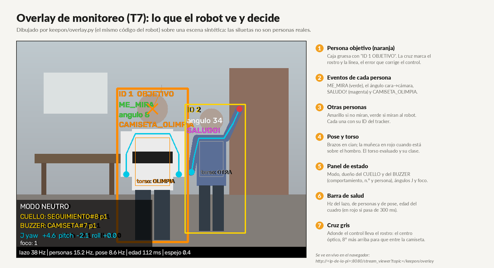
keepon/overlay.py sobre una escena sintética (las siluetas no son personas reales).| Qué | Cómo |
|---|---|
| Encender / apagar el robot | Panel del celular :8081 (botones Encender / Apagar), o keepon arrancar / keepon parar. Al parar vuelve a HOME. |
| Modos | keepon n · t · a · m (Neutro, Tímido, Atrevido, Maleducado) |
| STOP y HOME | keepon stop · keepon home (los dos quedan enclavados) · keepon resume los libera |
| Demostración de los ejes | keepon ejes o el botón Ejes del panel: yaw, pitch y roll en ~15 s |
| Sonidos y volumen | keepon sonido POLCA · keepon volumen 0-100 |
| Ver qué pasa | keepon estado · keepon log |
| Demo | keepon demo-on: arranca solo al encender la Pi (por defecto está apagado porque la Pi se usa en otros proyectos). |
scripts/panel_web.py) anda en cualquier celular sin instalar nada. Corre como servicio aparte siempre prendido, así que
sirve también con el robot apagado. Solo acepta una lista cerrada de comandos: desde la página no se puede ejecutar otra cosa en la Pi.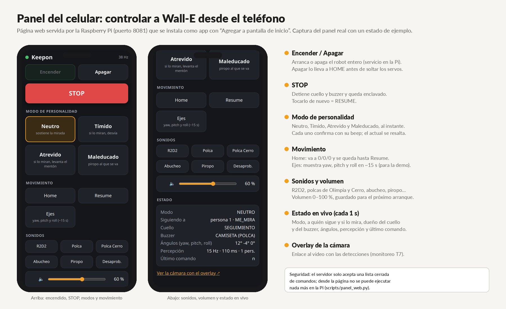
Resumen de docs/DECISIONES.md. Estas decisiones no se rediscuten sin datos nuevos.
| Decisión | Alternativa descartada | Por qué |
|---|---|---|
| Todo en la Pi, en Python puro | ROS 2 completo, o procesar en la notebook | Más simple de explicar y depurar; ROS 2 solo para leer la cámara, que ya funcionaba así en la Pi. |
| Mantener la ESP32 para los servos | Pulsos desde la Pi | La consigna pide microcontrolador + protocolo; el watchdog es independiente de Linux y el PWM no depende de la carga de la CPU. |
| Pi dentro de la cabeza | Pi en la base | La cinta de la cámara mide ~150 mm y no llega a la base. |
| Fuente de laboratorio + powerbank | LiPo con reguladores | Dos fuentes separadas aíslan la Pi del ruido y los picos de los servos. |
| YOLO26n a 256 px en NCNN | 480 o 320 px | 4,3 veces más rápido que a 480 y detecta igual a 1,5 m. |
| 2 procesos fijados a núcleos | Hilos | NCNN y MediaPipe no liberan el GIL: con hilos no hay paralelismo. |
| BlazeFace sobre recortes | Face Landmarker (478 puntos) | ~49 ms por cara y no encontraba los rostros lejanos en la imagen completa. |
| Tracker IoU propio | ByteTrack de Ultralytics | ByteTrack costaba ~68 ms por cuadro en la Pi. |
| Camisetas con reglas de color y patrón | Red entrenada | Sin datos para entrenar; las reglas se explican y ajustan con las prendas reales. La guía las permite. |
| Movimientos rápidos y pocos | Movimientos lentos y continuos | Los servos vibran moviéndose despacio; bajar vmax/amax/kp empeoró. |
| Curva S en todos los movimientos (08/11) | Trapecio solo | La aceleración cambia en rampa (jerk de 60 000+ a 12 000 °/s³); en el roll, sin curva S vibraba más. |
| Observador «exploracion» (08/11) | De punto en punto con pausas | Es lo que pide la Tabla 1 (barridos lentos, sacadas, roll para encuadrar); el anterior se veía «para y gira». |
| Polca una vez por aparición (08/11) | Cooldown de 25 s | Con la camiseta a la vista la polca se repetía (4 veces en 90 s). |
| HOME enclavado y Ejes con prioridad 0 (08/11) | HOME por fuera del árbitro | Los comportamientos pisaban el HOME en el ciclo siguiente; ahora queda hasta RESUME. |
| Mirada por objetivo | Control P en velocidad | Compensa el atraso de la cámara y deja el cuello quieto entre movimientos. |
| 2 × MG996R nuevos en pitch y roll | HS-7955TG y MG996R con zona muerta | Decisión del grupo (05/11): el HS metía ruido y el MG996R viejo tenía ~10° de zona muerta. |
| Firmware = copia del simulador | Escribir el firmware aparte | Los tests comparan los dos paso a paso: el comportamiento se prueba en la notebook. |
| Fragmento de 8 compases de la polca | Polca completa | La guía pide "un fragmento reconocible"; la completa ocuparía el buzzer más de un minuto. |
| Servicio de demo no activado al encender | Arranque automático siempre | La Pi se usa en otros proyectos y el robot toma la cámara y la ESP32. |
| Repo público | Repo privado | Para que la cátedra lo lea desde afuera (07/11). No se sube nada personal. |
| Requisito | Medido | Estado |
|---|---|---|
| Percepción ≥ 10 Hz | Personas 12–17 Hz · pose 7–10 Hz | Cumple en personas; la pose queda justo en el límite. |
| Latencia evento → respuesta ≤ 300 ms | Edad del cuadro 96–135 ms · lazo 25 ms · serie 4,4 ms | Estimación ≈ 130–170 ms; falta medirla de punta a punta (p. ej. SALUDO → R2D2 con el log). |
| Todo no bloqueante | Firmware sin delay(); percepción en procesos; colas que descartan lo viejo | Cumple |
| Recursos exclusivos | 0 violaciones en el escenario de 30 s | Cumple |
| Prioridades, cooldowns, histéresis | Tabla de prioridades; saludo 5 s por persona, camiseta una vez por aparición, piropo 40 s; histéresis de foco 1,5 s | Cumple |
| Overlay y log con marca de tiempo | Overlay T7 y log CSV | Cumple |
| 258tests con pytest | 36+firmware contra simulador, con fuzzing | 30/30pruebas en la ESP32 real | 8fallos de una revisión externa, cada uno con su test de regresión |
Además, scripts/sim_scenario.py corre un escenario completo de 30 s con personas sintéticas (seguimiento, saludo, camiseta, conflictos, STOP)
contra la ESP32 simulada o contra la real.
millis() contra el instante programado). Se corrigió con
una diferencia con signo: 60 s a 40 Hz y 6 minutos de robot real sin ningún WATCHDOG. Cada bug encontrado queda como test de regresión.| Probado en el robot real | Hecho, falta probar en el robot | Falta |
|---|---|---|
| Seguimiento con foco e histéresis · Observador «exploracion» · Saludo (3 cabeceos + R2D2) · Olimpia → polca mientras sigue · Cerro → abucheo · lisas sin falsos positivos · cambio de modo con beep · Tímido, Atrevido y Maleducado · dos personas · pérdida y recuperación · STOP · Ejes · polca una vez por aparición · curiosidad · HOME del operador · apagar a HOME · signo del roll · overlay y log · panel del celular (las 8 pruebas del video) | Validar el umbral de ME_MIRA (15°) con la cámara calibrada y más personas | Medir la latencia de punta a punta · calibrar la cámara · remera blanca real · banco del servo de roll |
| # | Tarea |
|---|---|
| 1 | Antes de la demo: sincronizar la Pi (/pi-sync-keepon), reiniciar el panel y probar la secuencia completa con la luz y las camisetas de la demo. |
| 2 | Repetir antes de la demo la secuencia de las 8 pruebas del video, con 2–3 personas. |
| 3 | Medir la latencia evento → inicio de respuesta (p. ej. SALUDO → R2D2 con el log). |
| 4 | Calibrar la cámara con un tablero y validar el umbral de ME_MIRA (15°). |
| 5 | Llevar el servo de roll al banco por la vibración girando a la derecha; si los servos tiemblan en giros rápidos, volver a poner el capacitor de 2200 µF + 100 nF. |
| 6 | Ensayo de la defensa con los cuatro integrantes (capítulo 19). |
| Integrante | Desarrollo realizado | Archivos / tareas |
|---|---|---|
| Mathias Aguilar | Diseño mecánico y programación en general | Diseño de la estructura (docs/diseno_v6/, v6 R4) y programación del robot (keepon/) |
| Héctor Velázquez | Conexiones, soldadura y programación | Cableado y alimentación, firmware de la ESP32 (firmware/) y programación (keepon/, scripts/) |
| Pablo Otazú | Ensamblado de la parte mecánica | Armado de las piezas impresas del v6 R4 con los servos |
| Pedro Vera | Modelado en SolidWorks y programación | Modelo en SolidWorks del v6 R4 y programación del robot (keepon/) |
docs/revisiones/. La consigna lo permite si se comprende
el proceso y el resultado: en la defensa pueden preguntar cualquier parte en detalle.keepon/ el robot en Python · firmware/ ESP32-C3 · config.yaml todos los parámetros · tests/ pruebas ·
scripts/ arranque, panel, carga de firmware y benchmarks · pruebas_servos/, pruebas_buzzer/, pruebas_camisetas/ bancos de prueba ·
docs/ documentación: empezar por docs/README.md (mapa y recorrido de lectura); docs/consigna/, docs/informe/,
docs/hardware/, docs/diseno_v6/, docs/revisiones/.La consigna dice que todos los integrantes tienen que poder responder sobre cualquier parte del sistema y que la nota individual se puede ajustar según la defensa. Estas son preguntas probables, con una respuesta corta sacada de esta guía; el detalle de cada tema está en los capítulos anteriores.
| 1. ¿Qué hace la Raspberry Pi y qué hace la ESP32? La Pi hace toda la inteligencia: percepción, eventos, foco, comportamientos y árbitro (lazo de 40 Hz). La ESP32 solo ejecuta: genera las trayectorias a 100 Hz con límites y curva S, el PWM de los servos y los sonidos, con watchdog y STOP. Se mantuvo la ESP32 porque la consigna pide microcontrolador + protocolo, el PWM no depende de la carga de Linux y el watchdog es independiente de la Pi. |
| 2. ¿Cómo llegaron a ≥ 10 Hz de percepción? YOLO26n exportado a NCNN con entrada de 256 px (18 ms en vez de 79 ms a 480 px), percepción en 2 procesos fijados a núcleos (NCNN y MediaPipe no liberan el GIL, con hilos no había paralelismo), tracker IoU propio (ByteTrack costaba ~68 ms) y BlazeFace sobre recortes de la cabeza. Resultado: personas 12–17 Hz, pose 7–10 Hz. |
| 3. ¿Qué es el árbitro y cómo resuelve un conflicto? Asigna los dos recursos exclusivos (cuello y buzzer). Reglas: un dueño por recurso, una propuesta solo le quita un recurso a un dueño menos importante que acepte ser interrumpido, se conceden todos los recursos pedidos o ninguno, y STOP cancela todo. Ejemplo: la polca (prioridad 2, buzzer) convive con el seguimiento (4, cuello); si la persona saluda, el saludo (1, cuello + buzzer) interrumpe a los dos y al terminar el seguimiento retoma el cuello. |
| 4. ¿Cómo evitan que el robot repita las respuestas? Saludo: cooldown de 5 s por persona y, para contar otro gesto, la mano tiene que bajar 0,4 s. Camiseta: una vez por aparición de la persona. Piropo: una vez por salida (flanco de SALIENDO) y como mucho uno cada 40 s. Los cooldowns cuentan desde que la acción empieza. |
| 5. ¿Cómo se define ME_MIRA? Con los 6 puntos de BlazeFace y solvePnP se estima hacia dónde apunta la cara; si el ángulo entre ese eje y la línea cara → cámara es menor a 15°, la persona mira. Se activa tras 0,5 s seguidos y se suelta tras 0,3 s (histéresis). Limitación: casi no se activaba porque la cámara no está calibrada con tablero. |
| 6. ¿Cómo detectan el saludo? Con MediaPipe Pose: la muñeca tiene que estar al menos 0,1 hombros por encima del hombro y oscilar de costado con amplitud ≥ 0,25 anchos de hombros (medido en hombros para no depender de la distancia). 2 cambios de sentido dentro de 2,5 s = un saludo. |
| 7. ¿Cómo detectan las camisetas? Con reglas propias de color y patrón, sin red entrenada: se ubica el torso con los hombros, se clasifica cada píxel en HSV y se busca el patrón (Olimpia: franja oscura entre franjas blancas; Cerro: rojo y azul en partes grandes separados por un borde vertical). Con la cámara del robot: Olimpia 82 % (99 % desde los 10 s), Cerro 98 %, lisas 0 % de falsos positivos. Limitación: Barcelona se parece a Cerro. |
| 8. ¿Cómo eligen a quién mirar? Primero a quien mira al robot (ME_MIRA). Si nadie mira, puntaje = 0,6 × tamaño + 0,4 × centrado. Un candidato tiene que ser mejor durante 1,5 s seguidos para quitarle el foco al actual. Si el objetivo se pierde menos de 1 s, se mantiene la mirada. |
| 9. ¿Cómo controlan la mirada? Mirada por objetivo: dirección = posición del cuello en el momento en que se sacó la foto + error de la cara en la imagen. Si se corrió más de 2,5°, se manda un solo movimiento rápido y el cuello queda quieto. Usar la posición del momento de la foto compensa el atraso de la percepción (~100–135 ms). El control proporcional en velocidad anterior hacía avanzar a los servos despacio y vibraban. |
| 10. ¿Qué es la curva S y por qué la agregaron? La posición que va al servo es el promedio del perfil trapezoidal en una ventana corta (0,10–0,15 s): la aceleración cambia en rampa en vez de saltar. El jerk del yaw bajó de 60 000+ a 12 000 °/s³ sin pasar vmax ni amax. En el roll, sin curva S vibraba más. |
| 11. ¿Qué pasa si se corta la comunicación o se reinicia la ESP32? Si la ESP32 no recibe nada válido en 500 ms (watchdog), corta el sonido, frena y mantiene la postura sin soltar los servos; la Pi manda PING cada 200 ms. Si la ESP32 se reinicia avisa HELLO 0: la Pi cancela todo, toma HOME como referencia, reabre la sesión y reenvía el STOP si estaba activo. |
| 12. ¿Cómo garantizan que nada bloquea? La percepción corre en procesos aparte y manda resultados por colas de tamaño 2 que descartan lo viejo; el lazo de la Pi nunca espera a la ESP32 (órdenes asíncronas con ACK); el firmware avanza trayectorias y sonidos por pasos temporizados con millis(), sin delay(). |
| 13. ¿Cómo pasan de grados a pulso? pulso = centro + signo × ángulo / (grados por µs), recortado a [min, max]. Ejemplo: pitch a +30° = 1500 + (−1) × 30 / 0,092 = 1174 µs, que coincide con lo medido montado. Cada servo se caracterizó en un banco porque no informan su posición. |
| 14. ¿Por qué dos fuentes de alimentación? Los servos generan picos de corriente y ruido; compartiendo fuente la Pi podía reiniciarse. Powerbank para la Pi y fuente de laboratorio a 6 V para los servos, unidas solo por el GND (sin GND común ningún servo se mueve). Encender: powerbank y después 6 V; apagar al revés, sosteniendo la cabeza. |
| 15. ¿Qué es desarrollo propio y qué no? Propio: árbitro, comportamientos, control de la cabeza, tracker, eventos, detector de camisetas, firmware, panel y diseño mecánico. De terceros (citados): YOLO26n (Ultralytics), MediaPipe (Google), OpenCV y camera_ros. IA para desarrollar: Claude Code, y revisiones con Codex. |
| 16. ¿Cómo lo probaron sin el robot? Primero se escribió el robot completo contra una ESP32 simulada y personas sintéticas. El firmware es una copia en C++ del simulador y 36+ tests los comparan paso a paso. En total 258 tests y un escenario de 30 s con 0 violaciones de recursos. Cada bug encontrado quedó como test de regresión. |
| 17. ¿Qué no funciona del todo? El umbral de ME_MIRA (15°) no está validado con la cámara calibrada (en las primeras pruebas casi no se activaba; de él dependen Tímido y Atrevido, que en el video sí funcionaron); la latencia evento → respuesta está estimada (≈ 130–170 ms) pero no medida de punta a punta; el roll vibra girando a la derecha en la zona negativa; Barcelona se confunde con Cerro; la pose queda en 7–10 Hz. |
| 18. ¿Qué muestran el overlay y el log? El overlay muestra personas con ID, el objetivo, los eventos, el modo, el dueño del cuello y del buzzer, los ángulos comandados y la salud (Hz y edad del cuadro). El log CSV guarda cada transición con marca de tiempo en logs/run_*.csv. |